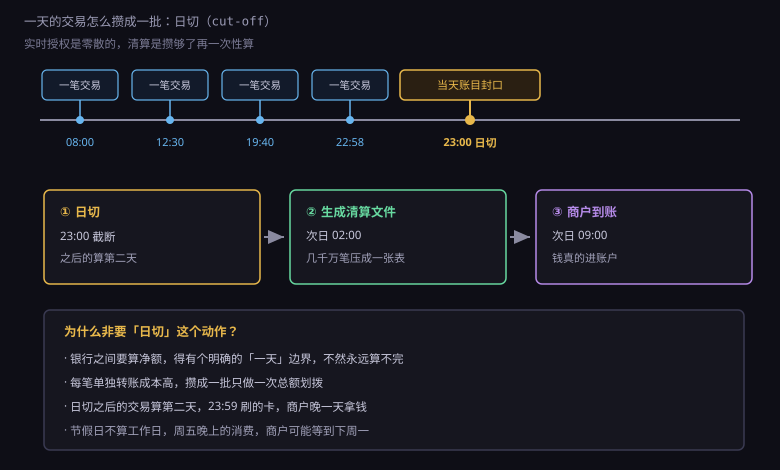
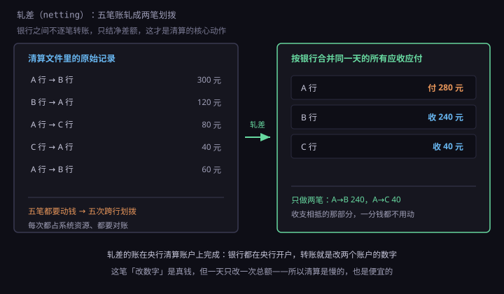
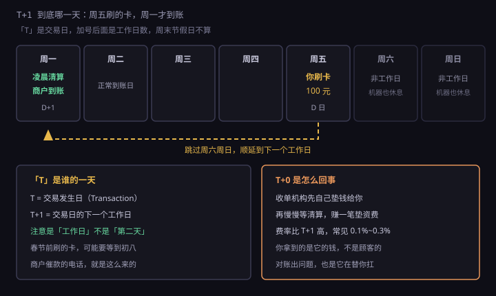

约 0.34 万字 · 3 张图 · 每天夜里，几千万笔交易被压成一张表、几十笔转账
银行的一天，不是从零点开始的。
你可能注意过一个奇怪的现象：晚上十一点多转账，到账时间显示的是第二天； 而凌晨一点转账，有时候又算当天。 这不是银行糊涂，是因为它的一天从日切（cut-off）那一刻才算结束。
日切就是把当天的账目封口：这一刻之前的所有交易，属于"今天"； 之后的所有交易，属于"明天"。 大部分银行的日切时间在晚上十点到十一点之间， 信用卡业务的日切常常更晚，有的到凌晨。

为什么非要这么一个动作？因为账要能算完。
只要还在营业，新的交易就一直进来。 如果系统永远在"当前状态"，那"今天这家银行该收多少、该付多少"这个问题就永远没有答案。 日切相当于喊了一声"停"，把流动的水截成一段一段， 每一段单独算清楚，才能跟别人对账。
截断之后还有几个小时的窗口，叫日终批处理。 这段时间里银行在干很多事：算利息、算手续费、更新账单、 生成清算文件、跑各种报表。 你半夜查余额发现数字变了、或者信用卡账单突然出账了，就是这会儿算出来的。
所以二十三点点五十九分刷的卡，和零点零一分刷的卡， 在系统里属于两个不同的"交易日"，商户到账能差整整一天。 这不是技术故障，是设计。
日切之后，各个收单机构手上都有一堆"我今天替这些商户收了钱"的记录。 这些记录要交给卡组织，格式叫清算文件（clearing file）。
注意它跟上一节的授权报文完全不是一回事。 授权报文是一条一条实时发的，短、快、只问不做； 清算文件是夜里批量生成的，长、全、每一笔都要带足证据。
一笔清算记录里通常包含：交易时间、卡号（或令牌号）、金额、 商户号、终端号、当初那个授权码、交易类型（消费/退货/预授权完成）。 那个授权码是关键——收单方拿它去跟发卡行对： "这笔是你昨天批准过的，现在我来请款。"
对不上怎么办？拒付。 发卡行找不到这个授权码，或者金额比授权的大，这笔请款就会被退回， 收单方得重新处理，商户继续等钱。 这就是为什么有些小店在你刷卡失败后会说"系统在维护，明天再来"—— 它其实是在等对账结果。
文件的形式比你想的土。很多系统到今天还在用固定长度的纯文本文件： 每一行 200 多个字符，第 1 到第 4 位是记录类型，第 5 到第 23 位是卡号， 第 24 到第 36 位是金额……一个字段错位，整批文件全废。 所以这类系统的校验极其严格，文件头里有总笔数、总金额， 收方第一件事就是把这两个数加起来核对，对不上直接打回重传。
文件收齐了，接下来是清算里最漂亮的一步：轧差（netting）。

假设今天只有三家银行 A、B、C 在互相发生交易，一共五笔： A 付 B 300，B 付 A 120，A 付 C 80，C 付 A 40，A 又付 B 60。
逐笔结算的话，要动五次钱，五次跨行转账，五次记账，五次对账。
轧差的做法是先按银行合并：
A 应收 120 + 40 = 160，应付 300 + 80 + 60 = 440，净付 280。
B 应收 300 + 60 = 360，应付 120，净收 240。
C 应收 80，应付 40，净收 40。
核对一下：280 = 240 + 40。收支正好平衡，一分不多一分不少。
于是五次划拨变成了两次：A 给 B 240，A 给 C 40。 剩下的那部分钱，压根没动过。
这个数字看着小，放到全国尺度上就惊人了。 银联一天处理的交易额是千亿级别，如果逐笔转账，所需的资金量和系统负载都无法承受； 轧差之后，实际需要划拨的净额可能只有总额的百分之几。 清算系统的核心价值，就是用"相抵"省掉绝大部分真实的资金流动。
这也是为什么清算必须批量做。实时轧差理论上也能做，但每来一笔就要重算全网净额， 成本高得离谱，而且没有意义——反正最终只需要一天结一次。
轧差算出来的净额，怎么真正转过去？
这里有个常被忽略的事实：银行之间的钱，不在银行的账上转，在央行的账上转。
每一家银行都在中央银行开一个账户，叫准备金账户（也叫清算账户）。 这个账户里的钱是真正的"央行货币"，是银行之间结算的最终手段。 A 行要付 B 行 240 亿，动作就是： 央行在自己的账本上，把 A 的准备金减 240 亿，B 的准备金加 240 亿。
就这么简单，也确实就这么简单。 所谓"转账"，在银行间层面就是央行记账本上两个数字的加减， 没有钞票移动，没有实物。 你觉得钱很"实"，是因为你手上的存款受这套账本支撑； 而在银行之间，钱就是账本上的一行记录。
在中国，这套账本的运转靠两套系统：
大额支付系统（HVPS）：实时、逐笔、全额。
金额大的、紧急的走这条，一笔一笔即时到账，不容许拖。
小额批量支付系统（BEPS）：批量、定时、轧差。
金额小的攒一批，隔一段时间结算一次，便宜。
银行卡的清算净额通常走大额系统，因为金额太大，必须实时全额； 你手机银行转的那几百块，多半走小额批量或者网联、银联的通道。
还有一个角色：备付金账户。 支付机构（比如各种钱包）收来的用户的钱，不能放在自己账上当营收， 必须全额存进央行指定账户，这叫备付金集中存管。 你扫码付的那笔钱，先到备付金池子里，再由它去跟商户的银行清算。 这条规定的意义很直白：不能让支付公司拿用户的钱去放贷或者投资。
这两个词天天一起出现，但专业上是两件事，混着说会闹笑话。
| 阶段 | 干什么 | 类比 |
|---|---|---|
| 清分（clearing） | 把交易分类、核对、算出谁该给谁多少 | 饭局结束，AA 算账 |
| 结算（settlement） | 按算出的净额，真正把钱划过去 | 各自掏手机转账 |
先算账，再付钱。算账可以反复算、可以改，付钱一旦付出去就难收回。 所以系统设计上也会把这两步隔开：清分阶段出错，改文件重跑就行； 结算阶段出错，那就是真的资金差错，要走冲正和人工处理。
你会在银行流水里看到"清算"两个字，指的是清分加结算的整个过程； 而在技术文档里，"清算"往往只指前者。看上下文。
商户最关心的问题永远是：钱什么时候到。 行业黑话是 T+1，但这个"1"经常不是一天。

T 是交易日（Transaction date），也就是你刷卡那天。 T+1 的意思是交易日的下一个工作日，注意是工作日，不是第二天。
周五晚上刷的卡，T+1 是周六，但周六不是工作日， 所以要顺延到周一。碰上国庆、春节这种长假，等上七八天是常事。 这就是为什么小商户在节前会催你"能现金就现金"—— 那笔钱它要过完年才见得到。
想快也有办法，叫 T+0：收单机构先自己掏钱垫给你， 第二天再从清算里收回。本质上是它给你放了一天的短贷，所以要收垫资费， 费率通常比 T+1 高万分之几到千分之几。 你拿到的那笔钱，其实是收单机构的钱，不是顾客的钱。
还有 D+0、S+0 这些说法，都是各家用不同字母表示同一个意思。 看到这类术语，别被字母搞晕，直接问"具体哪天到、几点到"。
清算系统里最耗人力的部分不是算净额，是对账。
同一笔交易，在至少四个地方留下了记录：POS 本地、收单系统、卡组织、发卡行。 这四份记录必须完全一致。少了一笔、多了一笔、金额差一分，都得查。
长款是指账上多出来的钱。比如系统记了两笔，实际只发生一笔；
或者退款的冲正没成功，钱退了两回。
短款是指少了。比如网络超时导致商户没收到请款，或者清算文件里漏了一行。
这两种情况在真实系统里天天发生，量还不小。 大机构的差错率能压到百万分之几，但乘上每天几千万笔，绝对数量依然可观。 所以对账系统是金融后台最核心的部分之一，比前台交易系统复杂得多。
对账的基本方法是三方对账：拿自己的流水，跟上游的、下游的各对一遍。 对不上的挑出来，形成"差错池"，然后按规则处理： 能自动冲正的自动冲正，不能的挂账等人工。
这套流程慢，但必须慢。因为每一笔调整都是在动真钱， 宁可多等三天，也不能凭猜。 你打客服问"我这笔钱怎么还没退"，对方说"请等三个工作日"， 背后就是这套差错处理在跑。
最后解释一个所有人都会遇到的困惑：扣钱一秒，退钱三天。
为什么？因为扣钱和退钱，走的不是同一条路。
扣钱的时候，钱还在你账上，发卡行只需要"冻一下"，动作极小、极快， 而且是实时授权通道，专门为速度优化的。
退钱的时候，钱已经在商户那边了。要退，得走完整链条：
商户在 POS 上操作退款 → 收单方生成一条退货交易 → 进当天的清算文件 → 卡组织清分 → 发卡行收到后冲减 → 你的额度/余额恢复。
每一步都要等一个批次。所以即便是"实时退款"，实际也是当天夜里清算，第二天才到。 很多商户说"退款已提交"，意思是它那一端做完了，钱还在路上。
更麻烦的是拒付（chargeback）：你对一笔交易有异议， 找银行申请退回，这时候不是走退款通道，而是启动争议流程。 发卡行要向收单方要证据，收单方要找商户举证，来回几轮，通常要一个月以上。 这段时间钱是冻结状态的，谁的账上也用不了。
所以在金融系统里，"快"和"可撤销"是一对矛盾： 授权快，因为它只是占位；清算慢，因为它动真钱。 理解了这一层，你看到"到账延迟"就不会觉得是银行偷懒了—— 它是这套设计必然的代价。